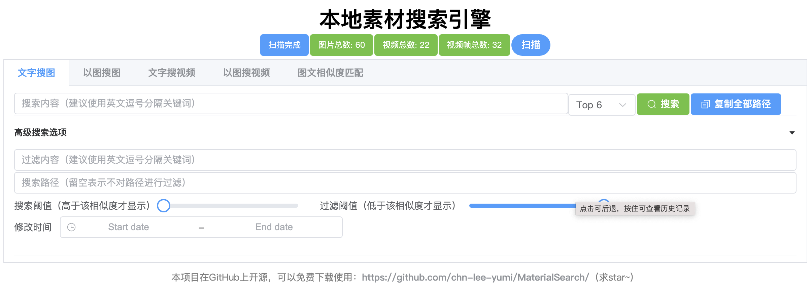

扫描本地图片与视频，通过文字描述或图片，秒速找到你想要的内容。完全本地运行，数据不上云。
⬇ 立即下载

基于 CLIP 多模态模型，理解图像语义，而非仅匹配文件名
用中文或英文描述，直接找出符合语义的本地图片，无需整理标签。
上传任意一张图片，快速找出本地素材库中视觉相似的图片。
输入文字描述，系统自动定位并截取符合描述的视频片段，精准到秒。
上传截图，找到该截图对应的视频来源片段，快速定位素材出处。
完全本地运行，所有数据不离开你的设备，无需联网，无隐私风险。
支持 GPU 加速，J3455 CPU 也可达每秒 31000 次图片匹配，速度极快。
简单部署，立即体验智能搜索
Windows 整合包一键解压运行，或通过 Docker 快速部署，无需配置复杂环境。
配置本地图片和视频目录，系统自动扫描并建立智能索引。
打开浏览器，输入文字描述或上传图片，即可找到你想要的素材。
观看视频教程，快速上手 MaterialSearch
满足不同场景的使用需求
欢迎加入用户互助 QQ 群，或在 GitHub 提交 Issue
免费开源，持续更新，快来加入数千用户的行列
前往 GitHub →